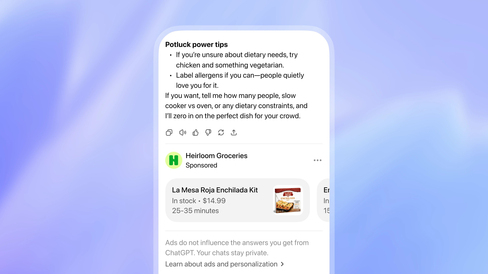
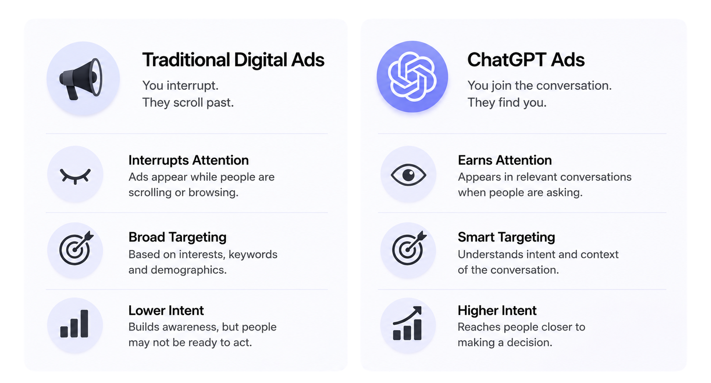

Turn AI Conversations Into Customers.
Your customers are already asking AI what to buy, where to go, and who to choose.
Make sure your business
is part of that conversation.
Why Your Business Needs to Be on ChatGPT?
1 Billion+ People Use ChatGPT.
Customers are asking ChatGPT what to buy and where to go.
AI
recommendations are influencing buying decisions.
Your competitors can be discovered before you.
Reach customers while they are actively looking for a solution.
Put your business in front of high-intent customers.
People use ChatGPT when they are exploring options, comparing ideas, or working toward a decision. In these moments, helpful recommendations can make discovery more useful.

Traditional Digital Ads vs. ChatGPT Ads
Google Ads, Meta Ads, and traditional digital marketing help businesses reach people through searches, feeds, interests, and browsing behavior. ChatGPT Ads take a different approach—reaching people while they are actively asking questions, exploring options, comparing businesses, and looking for solutions. Instead of simply competing for attention, your business can become part of the conversation when customers are closer to making a decision.

Why Choose Us?
We’re trusted by businesses worldwide, with 120K+ YouTube subscribers, 150M+ total views generated, and experience working with 50+ businesses globally across the UAE, India, USA, and Canada. We’re also backed by a corporate-registered firm, Winterfield AI LLC, giving businesses a professional and reliable partner for their ChatGPT advertising needs.
120K+ Subscribers — Achieved 120K+ on YouTube for Distractions AI
150M+ Total Views — Generated across content
50+ Businesses — Working globally in UAE, India, USA, Canada
Corporate Registered Firm — Winterfield AI LLC
Client Case Studies
Our client case studies showcase how businesses can use ChatGPT advertising to reach customers at the right moment. From increasing brand visibility to getting discovered when potential customers are actively looking for products and services, we focus on turning AI conversations into meaningful business opportunities. Each campaign is built around the client’s goals, audience, and industry to deliver measurable growth.
Ready to Put Your Business in Front of ChatGPT Users?
Reach customers when they’re actively asking, exploring, and deciding. Let us help you get your business discovered through ChatGPT Ads.
Start Advertising